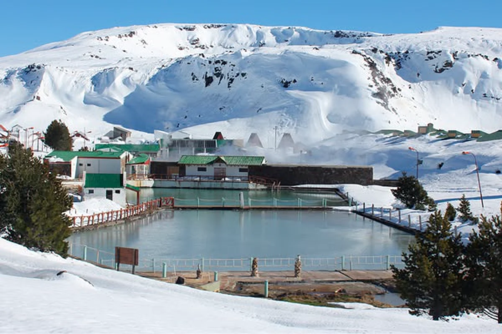

Termas en Caviahue

1 / 8
Caviahue y alrededores · Invierno
En el pueblo funciona una pequeña sede de las Termas de Copahue: fangos, algas y vapores para terminar un día de nieve.
Además de la villa termal de Copahue, en el pueblo de Caviahue funciona una pequeña sede de las Termas de Copahue, abierta también en invierno. Ofrece tratamientos con los fangos, las algas y los vapores de la zona: un plan ideal después de un día de nieve.
Consultá los servicios y horarios habilitados para la fecha de tu viaje.
Información oficial
Sitio oficial de las Termas de CopahueUbicación
Termas Caviahue
Ver ubicación en Google MapsTu lugar en Caviahue
Casas, cabañas, departamentos y hostal boutique para disfrutar de la Patagonia con tu familia, amigos o pareja. Reservá online o por WhatsApp.